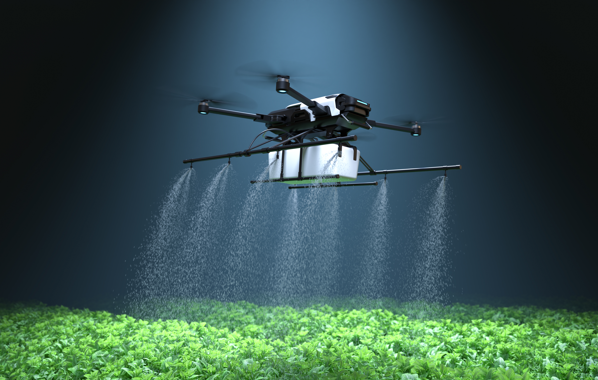

O Ecossistema do Agro
Clique em um dos pilares abaixo para expandir as informações na tela.
Solo Vivo
A base para a fertilidade e preservação biológica da terra.
Água Potável
Irrigação inteligente e economia real de recursos hídricos.
Biodiversidade
Equilíbrio ecológico trabalhando lado a lado com a produção.
Monitoramento
Inteligência climática baseada em previsões por IA e satélite.
Monitor de Biomas
Toque em um bioma no mapa para analisar dados.
Status do Ecossistema
Visão Sistêmica 2026
A preservação de cada bioma é vital para garantir a estabilidade climática e fortalecer a produtividade de todo o país.
Futuro Sustentável: Produção & Conservação
Interdependência Direta
O agro moderno depende de recursos naturais intactos, como ciclos regulares de chuva e insetos polinizadores. Preservar o meio ambiente é o verdadeiro seguro de vida para manter o campo produtivo a longo prazo.


Intensificação Inteligente
Produzir mais por hectare usando mapeamento vertical elimina a necessidade de expandir áreas cultivadas sobre florestas. A tecnologia atual assegura alta performance respeitando fronteiras biológicas.
Soluções para o Produtor Rural
Tecnologia de Ponta
Drones, IA e sensores aplicando água e insumos na quantidade exata, eliminando o desperdício.
Sistemas Integrados (ILPF)
Rotação de lavoura, pecuária e floresta para recuperar o solo e reduzir a pegada de carbono.
Bioinsumos
Uso de defensores naturais e microrganismos benéficos, reduzindo os químicos pesados.
Conectividade e cumprimento do Código Florestal.
Inclusão &
Legalidade
Pequeno Produtor
O desafio de fazer a tecnologia, a conectividade e o crédito chegarem com apoio técnico à agricultura familiar.
Combate à Ilegalidade
Necessidade de fiscalizar e separar o produtor correto (que segue as leis) daqueles que desmatam ilegalmente.
O Impacto da Tese Bio-Digital em 2026
45
%Redução no Uso de Água
100
%Áreas Mapeadas por IA
60
%Corte em Defensivos Químicos
Jornada da Inovação
Trabalho Braçal
Dependência total das estações e processos manuais com alto desperdício.
Conectividade 5.0
Drones, IoT e agricultura de precisão integrada aos biomas em tempo real.
Ecossistema Autônomo
Tratores a hidrogênio, fazendas verticais e restauração de biomas guiada por IA.
Referências Científicas
Todos os dados e pilares apresentados nesta tese são baseados em estudos de órgãos oficiais.